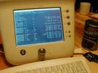
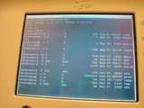

How to do the hack


This page explains how I got a Korn shell
running on my Audrey. It was a pain in the neck, but now the work is done and it
ought to be easier from this point on.
Overview
This is an overview of what I did:
- Get an Audrey flash ROM image on disk from
someone who knew someone who apparently serviced Audreys, and had a Compact
Flash card that was used to restore Audreys to their original state. Without
this image, I would have probably gotten nowhere.
- Using the QNX RTP, dump the contents of the
Audrey filesystem to disk.
- Add pterm, ftp, and a clever web page to my
local copy of the Audrey file collection.
- Regenerate the embedded filesystem.
- Put the filesystem back on the Audrey image,
and flash it back to the Audrey.
- Let the Audrey auto-update itself back to
the 1.02.08.01 final version.
- Run the shell and explore!
Detail
This should be enough detail for a determined person to
do what I did:
- Get a bunch of equipment ready:
At least one 32-meg CF card.
CF-to-Type II adapter, or some way to plug your CF card into a PC. I have a
laptop running Linux, so I use the Type II slot on it.
Power strip with a switch. This is important because otherwise you'll have
to unplug your Audrey about 3,000 times in a brief period of time, and I bet
it'll break if you do that.
Null modem cable that fits the Audrey's serial port on one end, and one of
the serial ports on your PC.
A PC running QNX RTP. It's free for
noncommercial use and it's a really cool OS.
- Get an Audrey flash ROM image. For me it involved some luck.
Unfortunately, I can't pass it along to you. That was the one condition of
my receiving it. I hope you understand that I can't give it out, so please
don't ask -- I will ignore any e-mail that contains a request for the image.
But if someone else has an image and wants me to post a link to it, e-mail
me at the address below and I'll put the link on this page.
- Break the image into its parts (I'll refer to the original file by the
filename audrey.cf):
0x00000000 - 0x0007FFFF: audrey.boot, the QNX Neutrino microkernel plus
bootloader.
0x00080000 - 0x00F3FFFF: audrey.fs, the QNX embedded filesystem containing
the Audrey files.
0x00F40000 - 0x01000000: audrey.rom, the VGA bios and IPL (image program
loader) that's a combination of 3Com and QNX code.
- Copy audrey.fs to the QNX PC and mount it:
devf-ram -u2 -b5 -r -s0,16m,0,16m,128k &
dd if=/root/audrey.fs of=/dev/fs0p0
flashctl -v -p/dev/fs0p0 -n/flash -m
At this point you have the Audrey filesystem mounted at /flash on your QNX
PC. Copy it into a new location (so that you can manipulate it). I'll assume
you put it in ~/audreyfs.
- Create a mkefs build file, or just use mine, which I
called ~/audrey.build (Note: I think that this file has to be in Unix
text file format -- if you have carriage returns in it by editing in on
Windows, it'll get confused and give you stupid error messages. This cost me
only about a week of my life):
[block_size=128K min_size=15990784 max_size=15990784 spare_blocks=1 mount=/]
[perms=a=rwx]
[uid=0 gid=0]
/config=config
[filter="flashcmp"]
[uid=0 gid=0]
/data=data
[uid=500 gid=500]
/etc=etc
[uid=0 gid=0]
/kojak=kojak
[uid=500 gid=500]
/nto=nto
[uid=500 gid=500]
/usr=usr
[uid=0 gid=0]
[type=link] /data/XML/Channels/.Channel00=/data/XML/Channels/.countertop
[type=link] /data/XML/Channels/.Channel01=/data/XML/Channels/ABCNews
[type=link] /data/XML/Channels/.Channel02=/data/XML/Channels/ESPN
[type=link] /data/XML/Channels/.Channel03=/data/XML/Channels/MRSHOWBIZ
[type=link] /data/XML/Channels/.Channel04=/data/XML/Channels/CBSMarketWatch
[type=link] /data/XML/Channels/.Channel05=/data/XML/Channels/AccuWeather
[type=link] /data/XML/Channels/.Channel06=/data/XML/Channels/DigitalCity
[type=link] /data/XML/Channels/.Channel07=/data/XML/Channels/Drugstore
[type=link] /data/XML/Channels/.Channel08=/data/XML/Channels/Food
[type=link] /data/XML/Channels/.Channel09=/data/XML/Channels/CyberBills
[type=link] /data/XML/Channels/.Channel10=/data/XML/Channels/.empty
[type=link] /data/XML/Channels/.Channel11=/data/XML/Channels/.empty
[type=link] /data/XML/Channels/.Channel12=/data/XML/Channels/.empty
[type=link] /bin=/nto/bin
[type=link] /data/XML/Content=/tmp/data/XML/Content
[type=link] /data/XML/Content.new=/tmp/data/XML/Content.new
[type=link] /dev/shmem/bootlog=/dev/null
[type=link] /dev/snd/pcmPreferredp=/dev/snd/pcmC1D0p
[type=link] /etc/ppp=/config
[type=link] /etc/config/trap/audio=/dev/shmem
[type=link] /kojak/bc/current=/kojak/bc/eng
#[type=link] /nto/bin/cp=/proc/boot/cp
#[type=link] /nto/bin/devf-ram=/proc/boot/devf-kojak
[type=link] /nto/bin/devf-ram=/nto/bin/devf-kojak
#[type=link] /nto/bin/flashlzo=/proc/boot/flashlzo
#[type=link] /nto/bin/mkdir=/proc/boot/mkdir
#[type=link] /nto/bin/mount=/proc/boot/mount
[type=link] /nto/bin/pdksh=ksh
[type=link] /nto/bin/sh=/nto/bin/ksh
[type=link] /nto/bin/tar=/proc/boot/tar
[type=link] /nto/bin/umount=/proc/boot/umount
[type=link] /nto/lib/libcam.so.1=/nto/lib/libcam.so
[type=link] /usr/lib/ldqnx.so.1=/proc/boot/libc.so.1
[perms=a=rwxs]
/kojak/CGI/Exec=Exec
- For some stupid reason, I couldn't get the QNX microkernel files to mount
at /proc/boot, so I just copied them into my local mirror on the Audrey
filesystem:
cd ~/audreyfs/nto/bin
dumpifs -x -b ~/audrey.boot
- Add in some new files. I chose the following:
nto/photon/bin/pterm
nto/photon/config/pterm/psh.rc
nto/photon/config/pterm/pterm.rc
nto/photon/.ph/pterm/pterm.rc -- I can't figure out why I had to put in two
copies of pterm
nto/bin/ftp
nto/bin/qtalk
kojak/CGI/shellex This file fell out of the sky but you can write one
yourself if you have a version of QNX that can compile for libc.so.1. It's
just a CGI binary that takes the QUERY_STRING environment variable and hands
it to /bin/sh. It needs to have its permissions set +s.
data/XML/shell.shtml This is the clever web page I talked about earlier.
Here's the source for it.
<html><head><title>Shell</title></head><body>
<!--#exec cmd="shellex $QUERY_STRING" -->
</body></html>
There's a whole bunch more stuff you could conceivably put in there, but
unless you're concerned about inefficient use of the filesystem, this will
be sufficient because you can ftp the rest of the stuff you need to the
system.
- Make the new embedded filesystem:
cd ~/audreyfs
mkefs ../audrey.build ../audrey_sowbug.fs
- At this point you have an "enhanced" Audrey filesystem. Recreate
the flash image using the tools I wrote:
cat audrey.boot audrey_sowbug.fs > audrey_sowbug.img
mkcf audrey_sowbug.img audrey_sowbug.cf 32047104
Note: 32047104 is the size of the CF card that I have. Find out the size
of yours by dd'ing the card to a file and seeing how big the file turns out
to be.
- Flash the CF file to the CF card:
dd if=audrey_sowbug.cf > /dev/hde
Note: /dev/hde is where my laptop mounts the CF card. Yours may be
different.
- Flash the Audrey! Turn it off, put in the CF card, hold down the datebook
and power buttons, and turn the power back on. Follow the instructions on
the screen.
- Get to the web browser and type in this URL:
http://localhost/shell.shtml?pterm
At this point, a terminal window should pop up. You now 0wN
your Audrey!
To do
- My symbolic links are screwed up, and I can't see the default channel
page. I need to fix the audrey.build file to get this right, because ln
explodes when I try it in the shell on the Audrey.
- Slinger, the miniature web server on the Audrey, can be configured to
listen on all addresses. If you're willing to deal with the security risk,
do this by editing this line in /config/rm-apps:
rb,/kojak/kojak-slinger, -c -e -s -i 127.1
to this:
rb,/kojak/kojak-slinger, -c -e -s
- Learn how to rebuild the QNX kernel. This seems to require some
information that I don't have (basically, the ELF header of the startup
program, and a library for at least one of the executables in the kernel).
It may be that I can just use the stuff included with the QNX RTP, but I'm
concerned that there's some interaction with the top of the ROM -- the BIOS
that lives there is a custom job done by 3Com, QNX, or a third party that
sold them the BIOS.
- Rewrite the Audrey-specific drivers in the QNX kernel. If I do this and
solve the kernel build issues, then it'll be possible to distribute all the
tools to allow other people to pull their images off their Audreys. This is
the Holy Grail of creating a completely legal
independent Audrey development community, because a person will be able to
do everything I've listed here with nothing but legally redistributable
files (QNX RTP and rewritten drivers).
- Add libc.so.2 to my image. This is a requirement for doing future
development under the QNX RTP -- presently, it's not possible to build
anything under that system that relies on libc.so.1 instead of libc.so.2.
- Get some sleep! I have been getting about 4 hours of sleep
every night over the last two weeks, and working at my normal job during the
day. I need rest!
Credits
- Unnamed person #1, who provided me the image that got this all started.
- Unnamed person #2, who came up with the idea of the shell.shtml page and
shellex executable. That was way cool, and I wish I could thank you in
person for it.
- All the people on the Linux
Hacker messageboards who sent me encouraging e-mail over the last two
weeks. It really helped keep the fire burning when I was exhausted!
This page is maintained by
Sowbug <mike @ this domain>
{kind=link}
{kind=link}